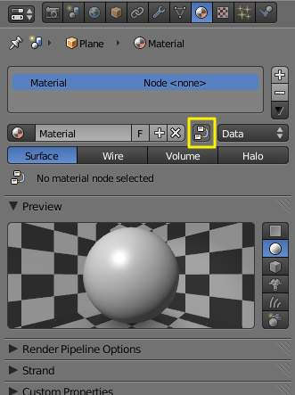
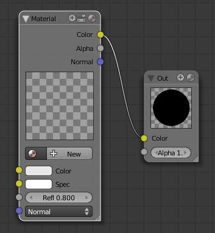
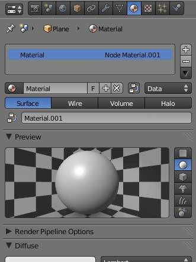
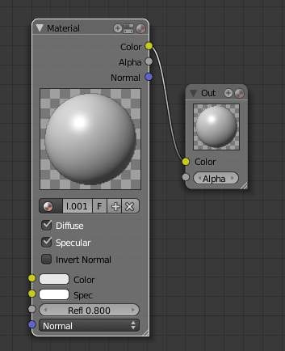

简介 to 节点¶
In addition to creating materials as just described using all the settings on all the materials panels, Blender allows you to create a material by routing basic materials through a set of nodes. Each node performs some operation on the material, changing how it will appear when applied to the mesh, and passes it on to the next node. In this way, very complex material appearances can be achieved.
You should already be familiar with general material concepts and how to create materials/textures using the material menu. You should also have a general understanding of the texture coordinate systems available in Blender (e.g. Generated, UV, etc.). Also, many aspects of a node will be skipped here because in later sections you will see the function expanded upon. Each section builds off the previous.
To start, the node system does not make the material menu obsolete. Many features and material settings are still only accessible through the material panel (e.g. Ray 镜像). However, with the advent of nodes, more complex and fantastic materials can be created since we now have greater control.
Just in case you’re not (yet) familiar with the concepts: when you create a system of nodes, you’re describing a data-processing pipeline of sorts, where data “flows from” nodes which describe various sources, “flows through” nodes which represent various processing and filtering stages, and finally “flows into” nodes which represent outputs or destinations. You can connect the nodes to one another in many different ways, and you can adjust “knobs, ” or parameters, that control the behavior of each node. This gives you a tremendous amount of creative control. And, it will very quickly become intuitive.
Having said all that, let us begin with a normal material.
Here we have the standard material we have added to a cube mesh. We could, as we have in the past, add color and other settings to this material and it would certainly look nice. But let us say we are just not getting what we are looking for? What if we want to control the creation more tightly or add more complexity? Here is where nodes come in.
Making this node map is accomplished by working in a 节点编辑器. This section covers:
- Enabling Material 节点.
- The 节点编辑器, its basic controls, and working with nodes.
- The specific types of nodes available for materials.
Accessing The 节点编辑器¶
First lets enter the node editor and make sure that the node editor has the material node button (the sphere icon) pressed, not the composite or texture node buttons.
Enabling Node Materials in the Material Buttons¶

Material’s menu with 节点 enabled. |

Default nodes. |
Let us take the base material and hit the 节点 button next to the material name in the material panel or the node editor. You will see a change in the material panel.
What you have just done is told Blender to make the material you were on to become the node tree. Most of the panels we normally find in the material menu are now gone.
Accessing the 合成 screen.
If you switch to the 合成 screen
with Ctrl-Left, if you are on the default screen,
you will find a 节点编辑器 on the top half of the screen.
When you enabled material nodes,
a material node and an output node were automatically added to the node editor.
You can also split the 3D视图 in the default screen in two and change one into a 节点编辑器.

Material’s menu with a first material added to the 节点编辑器. |

A first material added to the node setup. |
It is important to note that you can add a new material (which you can edit and change like any other material in the material panel), add an already created material or append a material from another blend-file, and also use the material that you used to create the node tree.
Here, we added a new material in the Node editor “Material.001”, and as we did, we can access the properties of this material in the material’s menu.